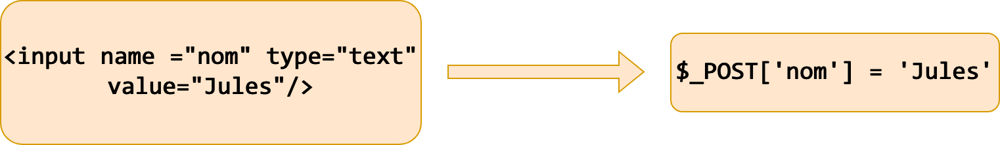
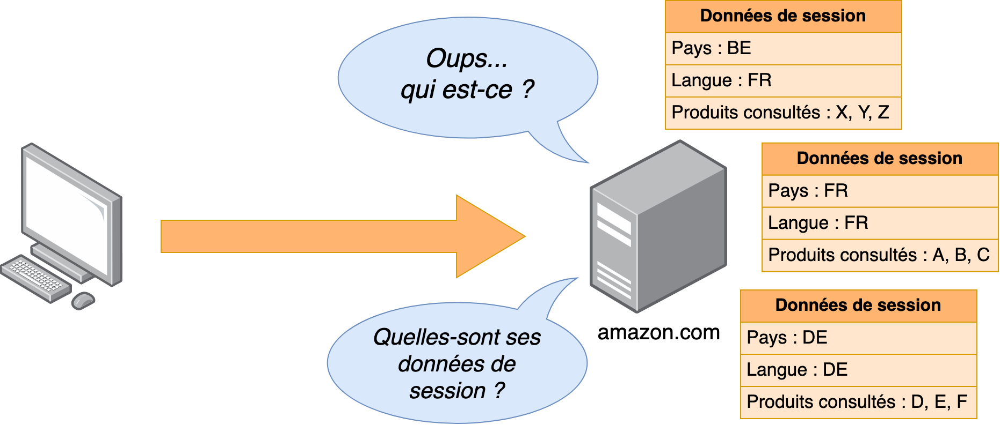
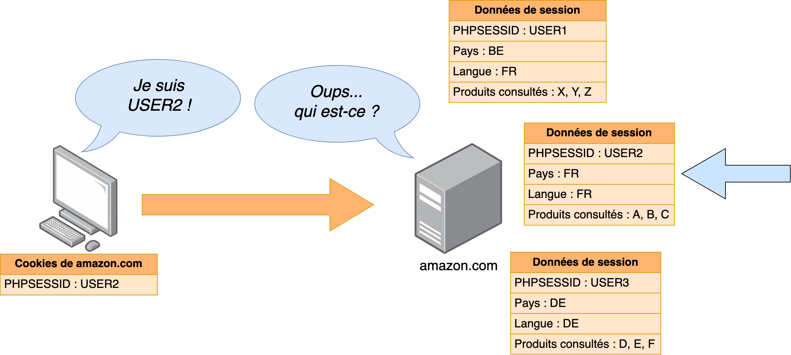
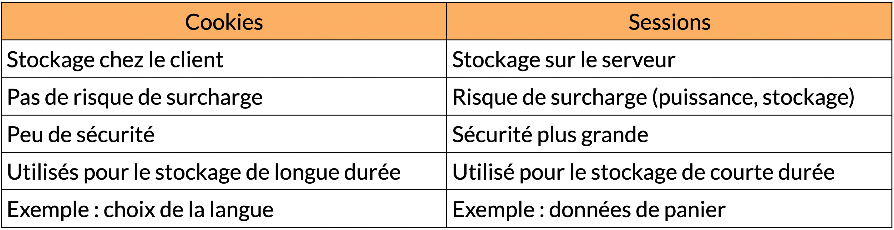

class: center, middle # Développement d’un site web dynamique : # échange de données --- ## On parle de quoi ? 1. <a href="UAA12-echanges_de_donnees.html#3">L'échange de données en PHP</a> 2. <a href="UAA12-echanges_de_donnees.html#3">GET et POST</a> 3. <a href="UAA12-echanges_de_donnees.html#8">Cookies et sessions</a> --- ## L'échange de données en PHP <div style="text-align: center;"> <img height="450px" src="img/schema_general.png"> </div> <br> <small>Image tirée du cours de "Développement web" - HENALLUX 2018</small> --- ## L'échange de données en PHP <br> *Les informations envoyées au serveur sont souvent plus complexes qu'une simple URL du document désiré.* Exemples : * Je suis un admin, voici mon pseudo et un mot de passe (POST) * La catégorie de vêtement qui m'intéresse est "Pantalon" (GET) * C'est encore moi, l'admin de tout à l'heure... j'aimerais que tu te souviennes de moi pour ne pas que je doive rentrer mon mot de passe à chaque fois (COOKIES) * Voici ce que tu peux ajouter à mon panier (SESSION) --- ## L'échange de données en PHP <br> *Les informations envoyées ne sont pas toujours simplement un document HTML entier* Exemples : * Scroll infini (AJAX) * Autocomplétion (AJAX) * ... --- ## L'échange de données en PHP <div style=" background-color:#f8eded; border-left:6px solid red; padding:20px; border-radius:6px; display:inline-block; text-align:left; margin-top: 100px; "> <h2 style="color:red;margin-top:0;">Un serveur PHP n'a pas de mémoire ("stateless")</h2> <ul style="color:#333;line-height:1.6;"> <li>Chaque requête est traitée séparément.</li> <li>Quand une requête est traitée, on oublie tout d'elle.</li> <li>Quand le serveur reçoit une nouvelle requête, il n'a plus de trace des requêtes précédentes.</li> </ul> </div> --- ## GET et POST ➡️ deux méthodes pour envoyer des informations depuis le client vers le serveur. ### Méthode GET * les informations se trouvent dans l'URL * format : `url?clé=valeur&clé=valeur&clé=valeur` * exemple : `https://www.google.be/search?q=javascript` ✅ Avantage : plus simple à comprendre puisque les données sont visibles dans l'adresse ❌ Inconvénients : * les données sont un peu trop visibles ; * les données pourraient être interceptées ; * les données pourraient être retrouvées dans l'historique de navigation --- ### Méthode GET Les données peuvent être écrites : * directement dans un lien HTML : ```html <a href ="http://monsite.be?cat=Pantalon">Lien</a> ``` * directement dans un script JS : ```js location.href = "http://monsite.be?cat=Pantalon ``` * construite en JS : ```js let cat = document.getElementById("cat").value let url = "http://monsite.be?cat=" + cat; location.href = url ``` --- ### Méthode GET Du coté PHP : ```php if (isset($_GET['nom'])){ $nom = $_GET['nom']; } ``` --- ### Méthode GET Certaines données passées en GET ne peuvent pas contenir certains caractères (espaces, =, &, ...). Exemple : `&nom=jules dupont` Solution : ces données doivent être "encodées" : * en JavaScript : `encodeURIComponent($chaine)` * en PHP : `urlencode($chaine)` Transformation : `&nom=jules+dupont` --- ### Méthode POST * les informations sont transmises séparément * format : pas visible * les données proviennent d'un formulaire --- ## GET et POST ### POST *les informations proviennent d'un formulaire et sont envoyées dans un paquet séparé* Avantage : * ne laisse pas de trace Inconvénient : * plus "lourd" à mettre en place <img height="100px" src="img/form.png">  --- ## Cookies et sessions De base, une application web est **"stateless"**, càd qu'il n'y a aucune méthode *automatique* pour : * suivre le parcours d'un utilisateur (ex. retenir le login, le niveau d'accès, etc.) * se souvenir de données d'une page à l'autre Exemple : * rends-toi sur un site de vente en ligne * ajoute quelques articles dans le panier * ferme le navigateur * ouvre de nouveau le même navigateur et rends-toi sur le même site de vente * ton panier contient toujours l'article ajouté précédemment * refais cette manipulation en navigation privée et observe la différence --- ## Cookies et sessions Le mécanisme pour "suivre" (pister, tracker) un utilisateur se fait à l'aide des cookies et des sessions : * **cookie** : données stockées chez le client * **session** : données stockées sur le serveur --- ## Cookies et sessions ### Cookies Caractéristiques : * stockées sur le disque dur du client * écrites / lues par le navigateur * liées à un site donné * envoyées avec chaque requête au serveur de ce site <img height="340px" src="img/cookie.png"> --- ## Cookies et sessions ### Cookies #### Accéder à un cookie ```php $_COOKIE['clé']; ``` #### Définir / Modifier un cookie ```php // expiration dans 7 jours setcookie('clé', 'valeur', time() + 60 * 60 * 24 * 7); ``` #### Détruire un cookie ```php // date d'expiration dans le passé setcookie('clé', '', time() - 3600); ``` #### Attention à la position dans le code ! ```php <?php setcookie('dernièreVisite', time(), time() + 60 * 60 * 24 * 7); ?> <!DOCTYPE html> ``` --- ## Cookies et sessions ### Sessions Problème : et si le client interdit les cookies ? <img height="340px" src="img/deny.jpg"> -- Solution : stocker les données sur le serveur, c'est plus sûr ! --- ## Cookies et sessions ### Sessions Problème : comment savoir quelles données correspondent à quel client ?  --- ## Cookies et sessions ### Sessions Solution : attribuer un identifiant à chaque client (stocké dans les cookies)  --- ## Cookies et sessions ### Sessions Oui mais... et si le client interdit les cookies ? --- ## Cookies et sessions ### Sessions #### Commencer une session ```PHP <?php // à exécuter avant la balise HTML ! session_start(); ?> ``` #### Créer / Modifier une variable de session ```PHP <?php $_SESSION['login'] = $loginUtilisateur; ?> ``` #### Lire une variable de session ```PHP <?php $loginUtilisateur = $_SESSION['login']; ?> ``` --- #### Tester si une variable de session existe ```PHP <?php if(isset($_SESSION['login'])){ // ... } ?> ``` #### Supprimer une variable de session ```PHP <?php unset($_SESSION['login']) ?> ``` #### Terminer / Effacer une session ```PHP <?php // Cas classique : l'utilisateur clique sur le bouton "Se déconnecter" session_destroy(); $_SESSION = array(); ?> ``` --- ## Cookies vs. sessions 